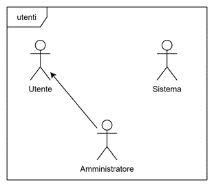
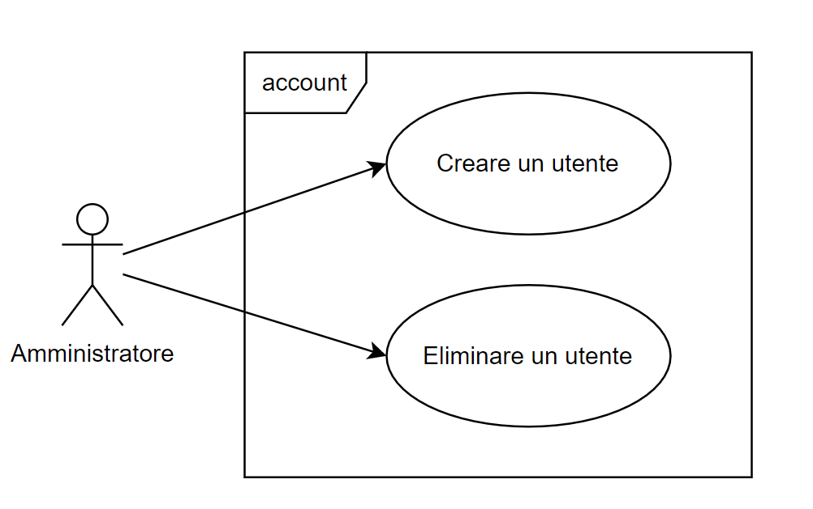
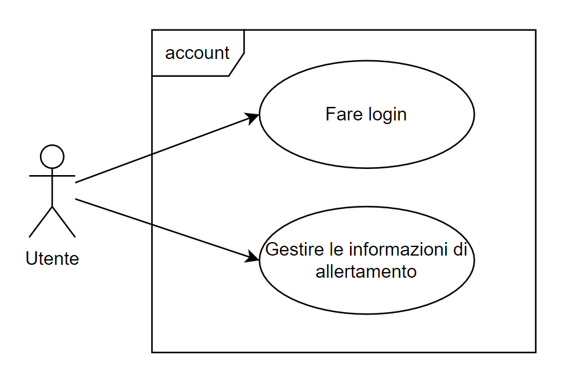
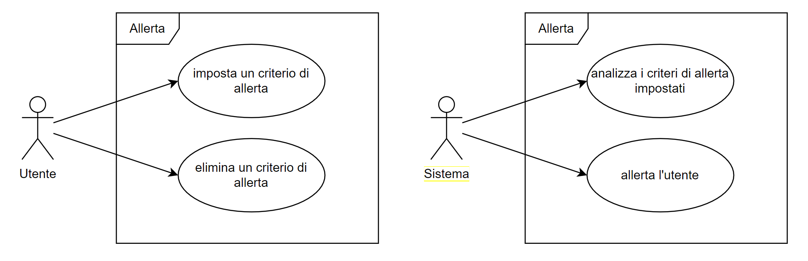
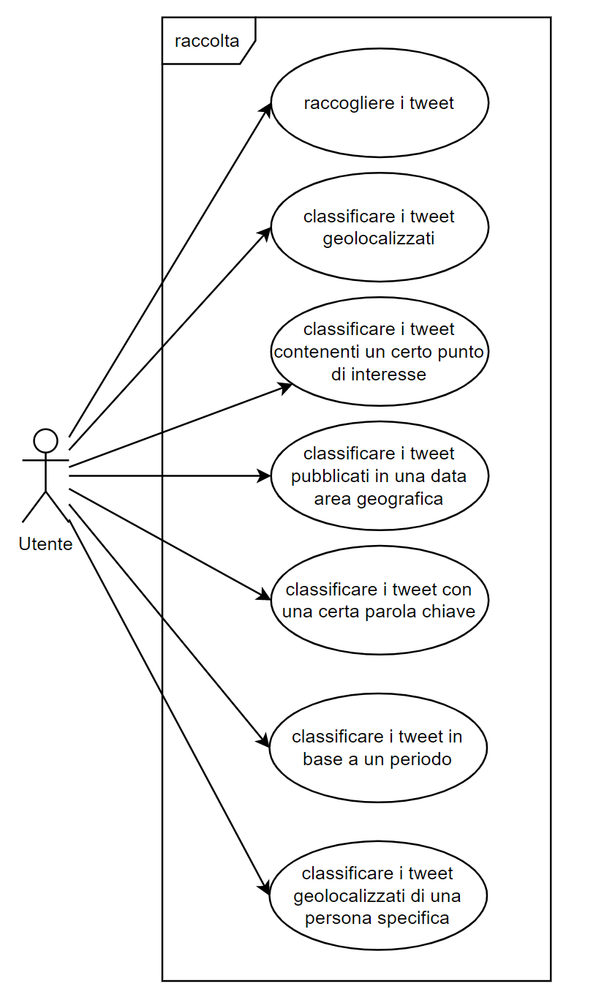
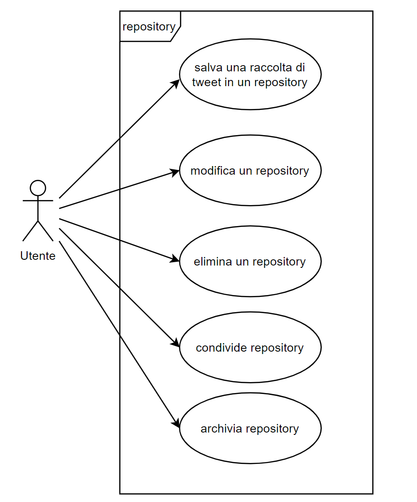
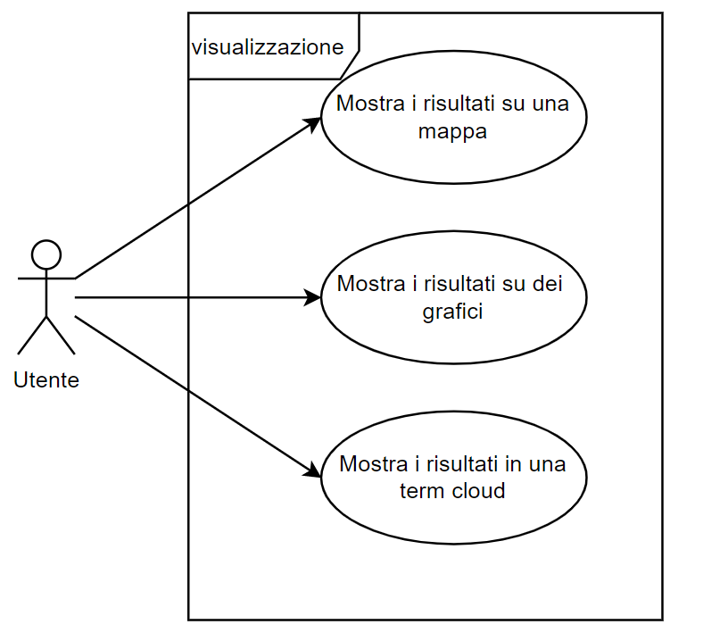

Introduzione¶
Obiettivo¶
L’obiettivo del progetto è la creazione di un software per fornire l’aggregazione e l’analisi di Tweet, in modo da rilevare eventi macroscopici, locali o più semplicemente filtrarli in base a delle keyword.
Il prodotto sarà utilizzato dal cliente e da un piccolo gruppo di suoi dipendenti per effettuare ricerche statistiche.
Il software andrà ad integrarsi direttamente con Twitter, da cui verranno raccolti dati e su cui verranno pubblicate allerte su di essi.
Campo di applicazione¶
Il software trova utilizzo principalmente in ambito statistico, essendo il suo scopo quello di raccogliere dati e permettere di analizzarli tramite un’interfaccia grafica.
Caratteristiche degli utenti¶
Il software potrà essere utilizzato da utenti con una discreta esperienza nell’analisi di dati ma senza particolari conoscenze informatiche.
Glossario¶
- Repository
Raccolta di tweet che soddisfano determinate condizioni.
- Condizione
Predicato logico che deve essere soddisfatto da un tweet per essere raccolto in fase di raccolta dati, o per essere contato in fase di allertamento utente.
- Filtro
Predicato logico che deve essere soddisfatto da un tweet per essere visualizzato in fase di analisi dati.
- Allarme
Notifica inviata all’utente attraverso un mezzo telematico, come email oppure un tweet.
- Utente
Utilizzatore del software con un proprio account creato dall’amministratore della piattaforma.
In particolare, la piattaforma prevederà due tipologie di utenti:
- Utente regolare
Potranno eseguire attività di creazione, analisi, condivisione, archiviazione ed eliminazione dei propri repository.
- Utente amministratore
Potrà effettuare tutte le attività dell’utente regolare, e in aggiunta potrà creare ed eliminare nuovi utenti regolari.
Macro-funzionalità¶
Il software permetterà di selezionare condizioni con cui scegliere quali tweet raccogliere:
in base ai loro hashtag
in base al loro autore
in base alla loro posizione geografica (ove presente)
in base alla loro data di pubblicazione
Selezionate le condizioni, l’utente potrà creare una repository: una cartella in cui verranno raccolti i tweet soddisfacenti le condizioni richieste.
Una volta raccolti, i tweet di una repository potranno essere analizzati in qualsiasi momento: durante l’analisi, saranno mostrate statistiche e grafici relativi ai tweet.
La raccolta potrà essere interrotta in qualsiasi momento archiviando il repository.
Sarà possibile condividere una repository con altri utenti della piattaforma, permettendo loro di analizzarla.
Infine, l’utente potrà configurare una repository in modo che gli invii una allerta qualora vengano raccolti un dato numero di tweet in una certa finestra temporale.
Casi d’uso¶
N.E.S.T. prevede tre tipologie di agenti («utenti» UML): utente, amministratore e sistema.
I principali casi d’uso individuati durante la progettazione di N.E.S.T. sono:
La gestione degli utenti da parte di un Amministratore:
La gestione del login da parte di un Utente:
La gestione delle Allerte sia dal punto di vista dell’Utente che del Sistema:
La gestione della raccolta da parte dell’utente:
La gestione di un repository da parte dell’utente:
La visualizzazione di un repository:

{kind=link}
{kind=link}
{kind=link}
{kind=link}
{kind=link}
{kind=link}
Backlog generale¶
Si riporta qui di seguito il Backlog definito ad inizio progetto, prima dell’avvio dello sviluppo. Gli elementi dal bordo grigio sono le epiche:
Nota
Alcune user story sono state rimosse in seguito al feedback ricevuto durante il primo sprint!